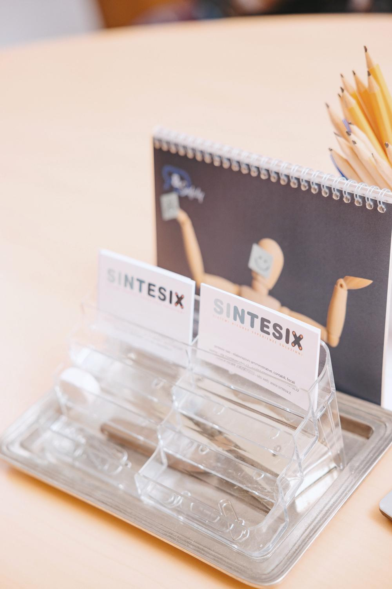

Bacheca
Quello che scriviamo

I pezzi della Bacheca
Articoli 27
- 23 febbraio 2026Articoli
Ma l’Italia è davvero quarta nel medagliere olimpico del 2026?
La classifica si stila in base agli ori. - Articoli
daDAMiele
Una piccola azienda apistica nata nel 2017. - Articoli
Less Cooking
Un business model per togliere a chi è in vacanza il pensiero della cena. - Articoli
Organic Pure
Prodotti per capelli e corpo con estratti naturali, dal 2011. - 31 ottobre 2019Articoli
Patrimoniale e tassazione degli immobili
La tassazione sugli immobili è un’imposta patrimoniale? Un ufficio di 400 metri quadri fa da esempio. - Articoli
Istruzioni di San Bernardino sul traffico (commercio)
Un libro del 1774 e gli abusi del commercio, allora come oggi. - Articoli
Ma il Lavoro, c’è o manca?
Il lavoro c’è: sono i lavoratori che mancano. - Articoli
Artuffo
Cento anni di modellismo in corso Giulio Cesare, a Torino. - Articoli
Le scarpe dei cavalli
La FIFPE, dai primi 250 ferri al giorno agli oltre tremila. - Articoli
Il panino della colazione
Quanto costa al chilo ciò che si mangia al bar? Più della pasticceria. - Articoli
SUQQO
Estratti di frutta e verdura spremuti a freddo, nati a Torino nel 2016. - Articoli
Aiutare i giovani a fare impresa
La responsabilità dei professionisti verso i giovani che vogliono fare impresa. - Articoli
Il lavoro cambia: quanti se ne accorgono?
Il lavoro intellettuale prevale sul manuale: quanti se ne accorgono? - Articoli
Perché ai professionisti conviene associarsi
Perché unire le forze conviene a chi esercita una professione. - Articoli
Fare società tra sconosciuti è possibile?
Come fare società per aumentare lavoro e capitali. - Articoli
Negoziante questo sconosciuto
Speculatore di cui diffidare o alleato del consumatore? - Articoli
Sport Line
L’abbigliamento sportivo come segno di appartenenza. - Articoli
Buoni pasto elettronici: cosa cambia dal 1 luglio 2015
Il valore esentasse del buono elettronico sale da 5,29 a 7 euro. - Articoli
Il Buon Riso
Dal 1949 il riso al centro della passione per le cose buone. - Articoli
Manuale Tipografico di Enrico Tallone
Nel bicentenario bodoniano, l’estetica di carte, filigrane e inchiostri. - Articoli
Relov
Skate AIR, il cruiser degli anni ’70 in plexiglass trasparente. - Articoli
Walter Dang
Prêt à Couture, Collezione Zer0. - Articoli
Auto ad uso promiscuo nell’Impresa: conviene?
Un bene strumentale che il fisco sembra scoraggiare. - Articoli
La S.r.l. per gli under 35: vera opportunità?
Quale modello societario scegliere per mettersi in proprio. - Articoli
Lucifero Illuminazione
Lampade ispirate alla donna, a basso impatto ambientale. - Articoli
Maison Walter Dang
Dal 2003, lusso e innovazione nella couture. - Articoli
@ … cosa?
Piccole regole per usare bene la posta elettronica.
Curiosità 7
- 28 agosto 2026Curiosità
Grappein e la Casa dell’Orologio di Cogne
Un medico che, duecento anni fa, gestì una miniera. - Curiosità
Ma piace il Panettone?
Chi scarta uvetta e canditi, e chi li vorrebbe nel Pandoro. - 3 febbraio 2026Curiosità
È finito negli SPAM: perché, cosa vuol dire
Da una scatoletta americana del 1937 alla posta indesiderata. - 27 febbraio 2017Curiosità
L’unità atomica dell’informatica è un BIT
BIT sta per «binary digit»: l’infinitamente piccolo dell’informatica. - Curiosità
Due lineette
Perché si tracciano due lineette alla fine di un articolo in Partita Doppia. - 23 febbraio 2013Curiosità
Marchio – Definizione e Volgarizzazione
La definizione di legge e i marchi diventati nomi comuni. - 4 marzo 2013Curiosità
Luca Pacioli – Giornale Capitolo X
Come Fra Luca Pacioli definiva il Giornale.
Auguri annuali 29
- gennaio 2026Auguri annuali

Orgoglio italiano
Gli auguri del settantesimo anno. - 2025Auguri annuali

Stronger together
- 2024Auguri annuali

Si può fare!
- 2023Auguri annuali

Bellum a nulla re bella
- 2022Auguri annuali

Scopo della scienza non è tanto quello di aprire le porte all’infinito sapere, quanto quello di porre una barriera all’infinita ignoranza
- 2021Auguri annuali

Gli uomini sono fatti per comprendersi per intendersi amarsi
- 2020Auguri annuali

Torino capitale del cinema
- 2019Auguri annuali

Orgoglio italiano
- 2018Auguri annuali

Eclissi
- 2017Auguri annuali

Equitalia
- 2016Auguri annuali

L’albero del MELF
- 2015Auguri annuali

Il futuro è digitale
- 2014Auguri annuali

L’Italia è una Repubblica fondata sul lavoro…
- 2013Auguri annuali

Viviamo tutti sotto lo stesso cielo…
- 2012Auguri annuali

Eeeeeeetcìssspread!!!
- 2011Auguri annuali

1861 nasce l’Italia unita, 2011 e gli Italiani?
- 2010Auguri annuali

PIL
- 2009Auguri annuali

Meno virtuale più reale
- 2008Auguri annuali

L’unione fa la forza
- 2007Auguri annuali

Un ponte per raggiungere gli obiettivi
- 2006Auguri annuali

Da cinquant’anni produciamo valore
- 2005Auguri annuali

Non è il grande che supera il piccolo…
- 2004Auguri annuali

Essere pronti è tutto
- 2003Auguri annuali

Mettete in tutte le cose che fate…
- 2002Auguri annuali

Euro fresco di giornata
- 2001Auguri annuali

New economy
- 2000Auguri annuali

Dedicato al III millennio
- 1999Auguri annuali

Fiscotax · Maximuntax 2+2=5
- 1998Auguri annuali

Contabilità: pessimismo · ottimismo